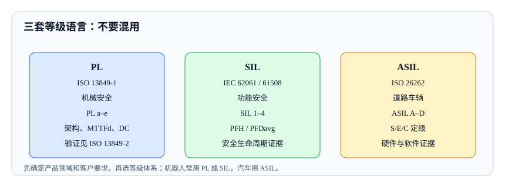

<script type="application/json" id="tb-manifest">
{
  "schema": "tb/1",
  "id": "L-003-004",
  "title": "功能安全：PL、SIL 与 ASIL 的区别",
  "module": "M03",
  "concepts": ["functional-safety-pl-sil-asil"],
  "target_level": "L3",
  "minutes": 55,
  "objectives": ["能解释 PL、SIL、ASIL 的来源与适用领域", "能为安全功能选择等级并给出验证证据", "能避免不同体系之间的错误换算"],
  "prerequisites": ["robot-safety-standards"],
  "exercises": ["EX-018-01", "EX-018-02"],
  "resources": ["R-ISO-13849-1", "R-ISO-13849-2", "R-IEC-62061", "R-IEC-61508-2", "R-ISO-26262"]
}
</script>
<article class="tb-lesson">
  <h1>功能安全：PL、SIL 与 ASIL 的区别</h1>
  <section>
    <p>一个机器人项目评审会上，客户问：“这个急停功能是 PL d 还是 SIL 2？”供应商的机械工程师说 PL d，电子工程师说 SIL 2，汽车背景的顾问说应该按 ASIL C。三个人说的都不是一回事，但会议室里没人能说清楚区别。最后文档里同时出现了三个等级，审核时被要求解释，项目延期两周。</p>
    <p>PL、SIL、ASIL 都在描述“安全功能需要多可靠”，但它们来自不同标准体系，不能直接换算。本课讲清楚三套体系的来源、等级含义、定级方法和验证证据，以及怎么选。</p>
  </section>
  <section>
    <h2>一、为什么会有三套体系</h2>
    <p>不同行业解决的是不同的问题，历史路径也不同：</p>
    <ul>
      <li><strong>机械行业</strong>长期使用 ISO 13849 的 PL，关注控制系统的架构、可靠性和诊断覆盖率。</li>
      <li><strong>流程工业与通用 E/E 系统</strong>使用 IEC 61508 的 SIL，强调安全生命周期和失效率。</li>
      <li><strong>机械领域的电气控制系统</strong>可以使用 IEC 62061 的 SIL，作为 ISO 13849 的并行路线。</li>
      <li><strong>汽车行业</strong>使用 ISO 26262 的 ASIL，关注道路车辆 E/E 系统的危害和可控性。</li>
    </ul>
    <p>三套体系的目标相同：把安全功能失效的风险降到可接受。但定级方法、证据要求和术语不同，所以不能简单说“PL d 等于 SIL 2”或“ASIL C 等于 PL e”。</p>
  </section>
  <figure>
    
    <figcaption>先确定产品领域和客户要求，再选等级体系；机器人常用 PL 或 SIL，汽车用 ASIL。</figcaption>
  </figure>
  <section>
    <h2>二、PL：ISO 13849-1</h2>
    <p>PL（Performance Level）是机械安全相关控制系统部件的性能等级，分为 PL a 到 PL e。它由几个因素共同决定：</p>
    <ul>
      <li><strong>类别（Category）：</strong>B、1、2、3、4，描述架构和冗余程度。</li>
      <li><strong>MTTFd：</strong>平均危险失效时间，反映部件可靠性。</li>
      <li><strong>DC：</strong>诊断覆盖率，反映能否发现危险失效。</li>
      <li><strong>CCF：</strong>共因失效，要求采取防止同因失效的措施。</li>
    </ul>
    <p>PL 的验证见 ISO 13849-2，要求通过分析和试验验证安全功能、类别和 PL。常见证据包括：风险评估、安全功能清单、架构图、MTTFd 计算、DC 评估、CCF 措施、验证报告。</p>
    <p>PL 适合机械安全相关控制系统，尤其是急停、安全门、光幕、速度监控等。它不适用于低需求模式，低需求模式通常用 IEC 61508 的 SIL。</p>
  </section>
  <section>
    <h2>三、SIL：IEC 62061 与 IEC 61508</h2>
    <p>SIL（Safety Integrity Level）是安全完整性等级，IEC 61508 分为 SIL 1–4，IEC 62061 针对机械领域分为 SIL 1–3。SIL 的核心是失效率指标，例如每小时危险失效概率 PFH 或按需失效概率 PFDavg。</p>
    <p>IEC 62061 是机械领域的电气/电子/可编程电子控制系统功能安全标准，适合高需求或连续模式。它要求安全生命周期活动、功能安全计划、配置管理、验证和确认。IEC 61508 是通用母标准，覆盖更广的 E/E/PE 安全相关系统。</p>
    <p>常见证据包括：安全需求规格、架构设计、PFH/PFDavg 计算、诊断覆盖率、软件安全完整性、验证与确认报告、功能安全计划。</p>
  </section>
  <section>
    <h2>四、ASIL：ISO 26262</h2>
    <p>ASIL（Automotive Safety Integrity Level）是道路车辆功能安全等级，分为 A、B、C、D。它通过危害分析和风险评估确定，考虑三个维度：</p>
    <ul>
      <li><strong>严重度（Severity，S）：</strong>S0–S3，伤害程度。</li>
      <li><strong>暴露（Exposure，E）：</strong>E0–E4，处于危险场景的频率或持续时间。</li>
      <li><strong>可控性（Controllability，C）：</strong>C0–C3，驾驶员或系统能否避免伤害。</li>
    </ul>
    <p>ASIL 等级决定安全生命周期活动的严格程度，包括硬件、软件、验证、确认和安全管理。常见证据包括：HARA、安全目标、功能安全概念、技术安全概念、安全需求、验证报告、安全案例。</p>
    <p>ASIL 只适用于道路车辆。机器人项目如果使用车载部件或自动驾驶技术，可以借用 ISO 26262 的方法，但不能把 ASIL 直接写进机器人安全声明。</p>
  </section>
  <section>
    <h2>五、怎么选</h2>
    <table>
      <thead>
        <tr><th>判断因素</th><th>倾向 PL</th><th>倾向 SIL</th><th>倾向 ASIL</th></tr>
      </thead>
      <tbody>
        <tr><td>产品领域</td><td>机械安全相关控制系统</td><td>机械电气控制或通用 E/E 系统</td><td>道路车辆 E/E 系统</td></tr>
        <tr><td>客户/市场要求</td><td>欧洲机械客户常用</td><td>流程工业或特定客户要求</td><td>汽车客户要求</td></tr>
        <tr><td>失效模式</td><td>高需求/连续模式</td><td>高需求或低需求模式</td><td>道路车辆危害</td></tr>
        <tr><td>证据偏好</td><td>架构、MTTFd、DC、CCF</td><td>PFH/PFDavg、安全生命周期</td><td>HARA、S/E/C、安全案例</td></tr>
      </tbody>
    </table>
    <p>选择时先看产品领域和客户要求，再看失效模式和现有证据。不要为了“看起来更高级”选一个不匹配的体系。一个机械急停功能用 ASIL 表达，审核方无法判断其机械安全证据；一个车载功能用 PL 表达，也无法满足汽车客户。</p>
  </section>
  <section>
    <h2>六、实例：协作机器人急停</h2>
    <p>某协作机器人急停功能需要确定等级。项目面向欧洲机械市场，客户要求按 ISO 13849 评估。分析过程：</p>
    <ol>
      <li><strong>安全功能：</strong>急停触发后，机器人应在规定时间内进入安全停止状态。</li>
      <li><strong>风险：</strong>人机共融场景，急停失效可能导致碰撞或挤压。</li>
      <li><strong>体系：</strong>机械领域，客户要求 ISO 13849，因此选 PL。</li>
      <li><strong>目标：</strong>根据风险评估确定 PLr（要求的性能等级），例如 PL d。</li>
      <li><strong>设计：</strong>双通道急停回路、诊断覆盖、共因失效措施、安全-rated 监控。</li>
      <li><strong>验证：</strong>按 ISO 13849-2 做分析和试验，验证类别、MTTFd、DC、CCF 和 PL。</li>
      <li><strong>证据：</strong>风险评估、安全功能清单、架构图、计算书、试验报告、剩余风险记录。</li>
    </ol>
    <p>如果客户同时要求 IEC 62061，可以并行做 SIL 评估，但要在文档中说明两套体系的对应关系和各自证据，不能把 PL d 直接写成 SIL 2 而不加解释。</p>
  </section>
  <section>
    <h2>七、常见误区</h2>
    <ul>
      <li><strong>直接换算等级。</strong>PL d 不等于 SIL 2，ASIL C 也不等于 PL e。</li>
      <li><strong>用 ASIL 描述机器人安全功能。</strong>除非产品属于道路车辆范畴。</li>
      <li><strong>只写等级不写证据。</strong>等级是结论，证据才是审核对象。</li>
      <li><strong>忽略低需求/高需求模式。</strong>模式不同，适用的标准和方法不同。</li>
      <li><strong>把安全功能当普通功能。</strong>安全功能需要独立的安全生命周期和验证。</li>
      <li><strong>不锁定标准版本。</strong>ISO 13849-1:2023、IEC 62061:2021+AMD1:2024、ISO 26262:2018 系列的要求不同。</li>
    </ul>
  </section>
  <section>
    <h2>八、检查清单</h2>
    <ul>
      <li>是否先确定产品领域和客户/市场要求？</li>
      <li>是否选择了匹配的等级体系，而不是混用？</li>
      <li>安全功能是否单独列出并有风险评估？</li>
      <li>等级目标是否有推导依据？</li>
      <li>是否按对应标准完成验证（ISO 13849-2、IEC 62061、ISO 26262）？</li>
      <li>证据是否能回答“为什么这个等级足够”？</li>
      <li>标准版本是否写明并锁定？</li>
    </ul>
  </section>
  <section>
    <h2>七、三套体系速查</h2>
    <table>
      <thead>
        <tr><th>维度</th><th>PL</th><th>SIL</th><th>ASIL</th></tr>
      </thead>
      <tbody>
        <tr><td>标准</td><td>ISO 13849-1/-2</td><td>IEC 62061 / IEC 61508</td><td>ISO 26262</td></tr>
        <tr><td>领域</td><td>机械安全相关控制系统</td><td>机械电气 / 通用 E/E 系统</td><td>道路车辆</td></tr>
        <tr><td>等级</td><td>PL a–e</td><td>SIL 1–4（62061 为 1–3）</td><td>ASIL A–D</td></tr>
        <tr><td>定级输入</td><td>风险 → PLr → 架构/可靠性/诊断</td><td>风险 → SIL → PFH/PFDavg</td><td>HARA → S/E/C → ASIL</td></tr>
        <tr><td>关键证据</td><td>类别、MTTFd、DC、CCF、验证</td><td>安全生命周期、PFH、验证</td><td>安全目标、安全案例、硬件/软件证据</td></tr>
        <tr><td>不能替代</td><td>ISO 26262、网络安全</td><td>产品安全认证、SOTIF</td><td>机器人安全标准、网络安全</td></tr>
      </tbody>
    </table>
    <p>这张表可以用来快速判断“客户说的等级属于哪个体系”。如果客户说“要 SIL 2”，先问是机械领域还是流程工业；如果客户说“要 ASIL C”，先确认产品是否属于道路车辆；如果客户说“要 PL d”，再确认是 ISO 13849-1 的 PL 还是其他体系。</p>
    <p>还要注意等级的内部差异。PL d 不是单一指标，它由类别、MTTFd、DC 和 CCF 共同支撑；SIL 2 也不是一个数字，它涉及 PFH、架构、软件和验证。写文档时要给出完整论证，而不是只写一个等级字母。</p>
  </section>
  <section>
    <h2>八、评审与面试追问</h2>
    <ul>
      <li><strong>问：PL d 等于 SIL 2 吗？</strong>答：不能直接换算。两套体系的定级方法、指标和证据不同，只能通过专门分析说明对应关系。</li>
      <li><strong>问：机器人用 PL 还是 SIL？</strong>答：机械领域常选 PL，也可选 IEC 62061 的 SIL；取决于客户、市场和现有架构，不能随意混用。</li>
      <li><strong>问：ASIL 可以用于机器人吗？</strong>答：ASIL 是道路车辆的概念；机器人项目如果使用车载部件，可以借用方法，但不能直接写进机器人安全声明。</li>
      <li><strong>问：PLr 和 PL 有什么区别？</strong>答：PLr 是风险分析要求的性能等级，PL 是实际设计达到的性能等级；两者要比较，PL ≥ PLr 才算满足。</li>
      <li><strong>问：功能安全证据里最重要的是什么？</strong>答：能证明“安全功能在失效时仍能把风险降到可接受”的完整证据链，而不是单一证书或等级字母。</li>
    </ul>
  </section>
  <div data-tb-exercise="EX-018-01"></div>
  <div data-tb-exercise="EX-018-02"></div>
  <section>
    <h2>与其他模块的连接</h2>
    <ul>
      <li><strong>风险分级</strong>提供安全功能的后果和暴露，是定级输入的一部分。</li>
      <li><strong>机器人安全标准</strong>决定用 PL 还是 SIL，以及是否需要协作或移动专项验证。</li>
      <li><strong>市场准入与认证</strong>要求功能安全证据进入技术文件和符合性评估。</li>
      <li><strong>综合方案</strong>把功能安全、性能、认证和剩余风险整合成发布决策。</li>
    </ul>
  </section>
  <section>
    <h2>小结</h2>
    <p>PL、SIL、ASIL 是三套不同的等级语言：PL 来自 ISO 13849，关注机械控制系统的架构和可靠性；SIL 来自 IEC 62061/61508，关注失效率和全生命周期；ASIL 来自 ISO 26262，关注道路车辆的危害和可控性。先选体系，再用该体系的方法定级和验证，不要跨体系直接换算。</p>
  </section>
</article>
